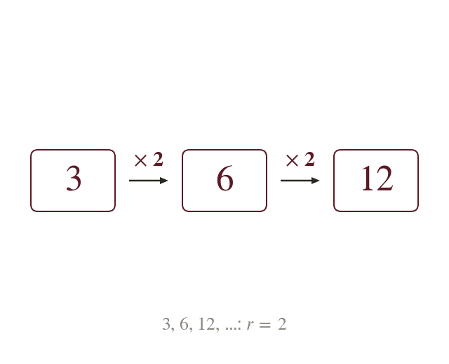
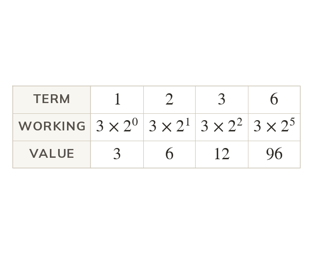
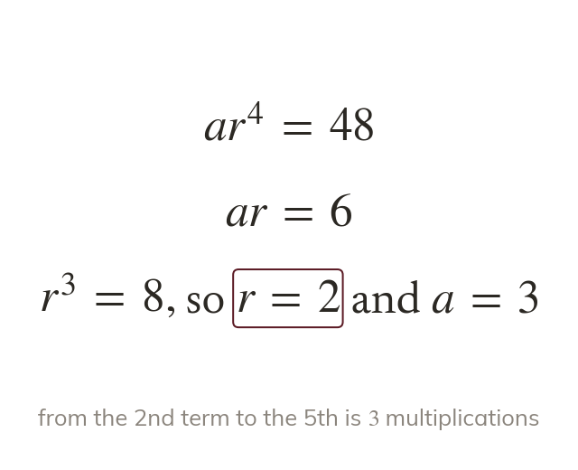
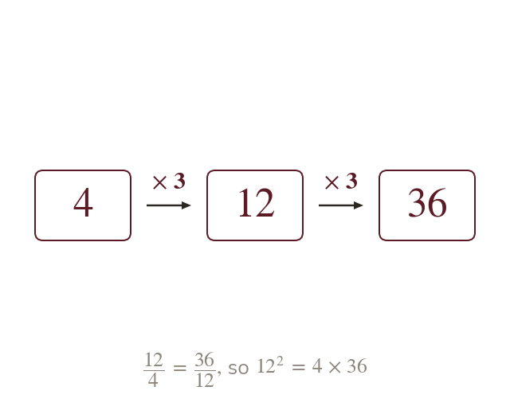
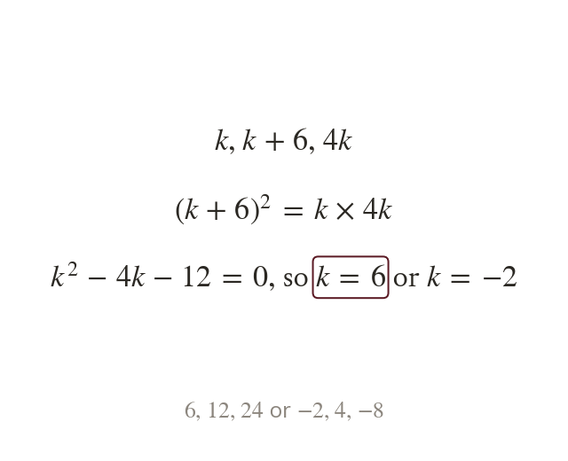
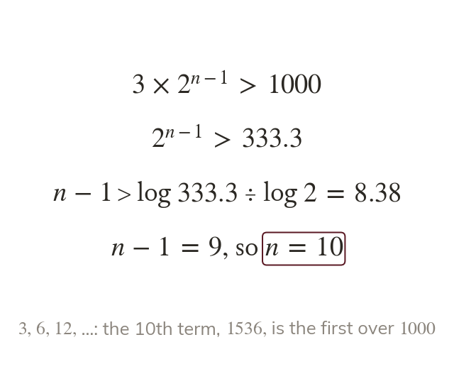

The same ratio every time
In a geometric sequence each term is the one before multiplied by the common ratio r. A ratio between and makes the terms shrink, and a negative ratio makes their signs alternate.
A geometric sequence multiplies by the same ratio each time, which is how compound interest, growth and decay behave. Its nth term with logarithms to find leads straight into geometric series in
Work down the page at your own pace. Write every answer in your book first, then click to check it.
Read each card, then follow the worked examples one step at a time.

In a geometric sequence each term is the one before multiplied by the common ratio r. A ratio between and makes the terms shrink, and a negative ratio makes their signs alternate.

The nth term is n - multiplications by after a, so it is
The 6th term of ... is

Dividing one term by another cancels a and leaves a power of If the 2nd term is and the 5th is then
Pick an answer. If it's wrong, the feedback tells you which mistake it was.
Write the blanks in your book first, then tap each one to check.
Read each card, then follow the worked examples one step at a time.

Three consecutive terms are geometric when . Cross-multiplying gives

When the terms are written in k, set the ratios equal and cross-multiply. The equation is often a quadratic, so check each root.

To find the first term above a value, solve > value with logarithms. Then n is the next whole number.
Pick an answer. If it's wrong, the feedback tells you which mistake it was.
Write the blanks in your book first, then tap each one to check.
Finished? Next lesson: P2-3.4 Geometric Series and Sum to Infinity.
For each skill, tap the one that is true for you today. Your Revise pages start with anything you mark Not yet.
Your ratings are saved on this device only.
Log in, then search for a code to practise that skill.